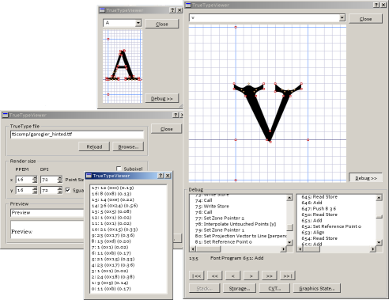

The TrueTypeViewer shows any TrueType font. It is extremely useful for debugging TrueType instructions and for viewing OpenType Layout features. Its user interface should be self-explanatory. Any questions remaining, however, should be directed to me.
The virtual machine should now do exactly the same as the one provided by Microsoft in Windows 2000. This includes all undocumented behaviour for twilight points. If you find anything still looking wrong, please send me a note.
It now supports all OpenType positioning and substitution lookups. To see these working, you may try Palatino Linotype that comes with Windows, or one of my own fonts.

(This image may have an ugly greyish background on browsers that don't have PNG alpha support,
such as IE 5)
You may download a MS Windows binary (i.e., a working program file) here. It works on Windows 2000 and Windows 95; other 32 bit Windowses (98, ME, XP etc.) should work as well. You do need the Qt library though. If you do not yet have the file qt-mt230nc.dll on your system, you can download a version of the TrueTypeViewer that includes the file.
The source is available as well. If you find any bug, please email me (please make sure I'll be able to reproduce it using the information you give me). Thank you.